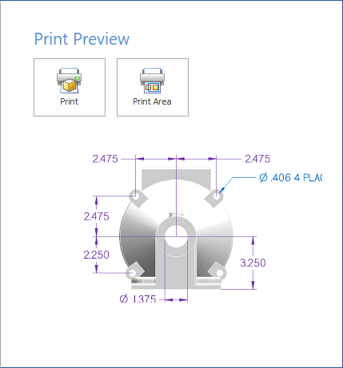
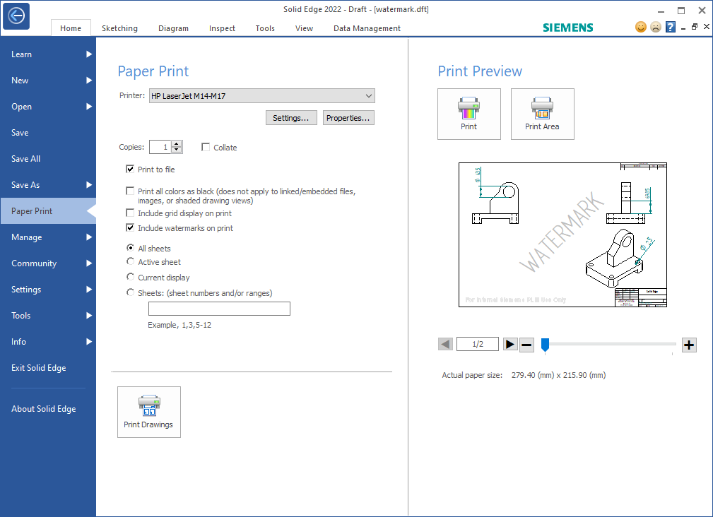
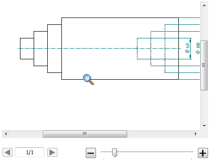

Using the Paper Print page
The Paper Print page on the File menu contains all the 2D print commands and related functions for printing any Solid Edge document to paper or to a file. The left and right panes on the Paper Print page group similar functions and make them visible and available without having to navigate additional menus.
Options for printing documents
The print options that are available on the left side of the Paper Print page vary with the type of document you are printing. For information about these options, see:
You also can save model documents to STL file format for 3D printing. For more information, see Using the 3D Print page.
Paper Print basics
-
The Print, Print Area, and Print Drawings commands operate on the document that is open in the active window in Solid Edge.
-
The print setup, print preview, and print-to-file functions are integrated directly into the Paper Print page. When you click the Print button, the document is sent directly to the printer.
-
If you want to print a small area of detail on a model or a close-up of the title block text on a drawing, select the Print Area command. To learn how to do this, see Print an area.
-
The Print Preview pane for a part, sheet metal, or assembly document shows a static view of the model.

The Print Preview pane for Draft documents show a live preview of the drawing, along with zoom, scroll, and sheet controls.

Reviewing draft documents before printing
You can use the controls on the Print Preview pane to review every sheet in a multi-sheet drawing before you print it. You also can zoom in to verify the contents of title blocks and other details on the drawing.
-
A page counter below the preview window shows the current sheet number and total number of sheets. Use the next and previous sheet controls to click through each sheet in the drawing to verify that they are ready to print.
-
There are several ways to zoom in and out.
-
If you click inside the window, you zoom in one step at a time. This also activates the scroll bars for you to see different areas of the sheet.

-
You also can zoom in and out using the mouse wheel when the magnifying glass icon is displayed.
-
Below the preview window, use the slider to zoom in or out gradually. The '+' and '-' buttons zoom in and out one step at a time.
-
How do I
Print a documentPrint to a file
Print an area
Print at a 1:1 scale
Print a composite drawing
Print to Adobe PDF
Change PDF printer properties
Learn more
Printing documentsPrinting composite drawings
Look up more details
Paper Print settings for draft documentsPaper Print settings for model documents
(Print) Options dialog box
Print Area dialog box
Options-Multiple Sheets per Page
Options - Single Sheet per Page
Print Drawings - Select Sheets dialog box
Print Drawings - Select Documents dialog box
Preview dialog box